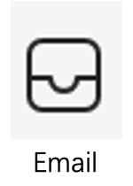
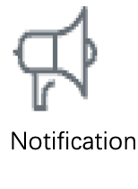
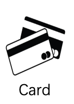
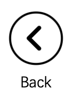
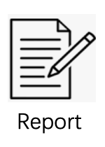
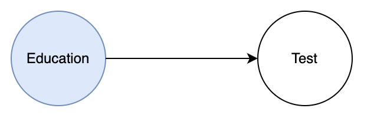

0
0
0
Home Page
Icon Introduction
Icon 1:
This is the emails information. 
Icon 2:
This is the notifications. 
Icon 3:
This is cards information. 
Icon 4:
This is Back Button. If you think you cannot solve the dark patterns, you can skip it by using this button. 
Icon 5:
This is report Button. If you have any comments about the patterns you can click this to submit. 
Consequence Education

Nagging
Obstruction
Sneaking
Interface Interference
Forced Action
Continue
When you have completed the first part, please click this
link
to enter the test
>